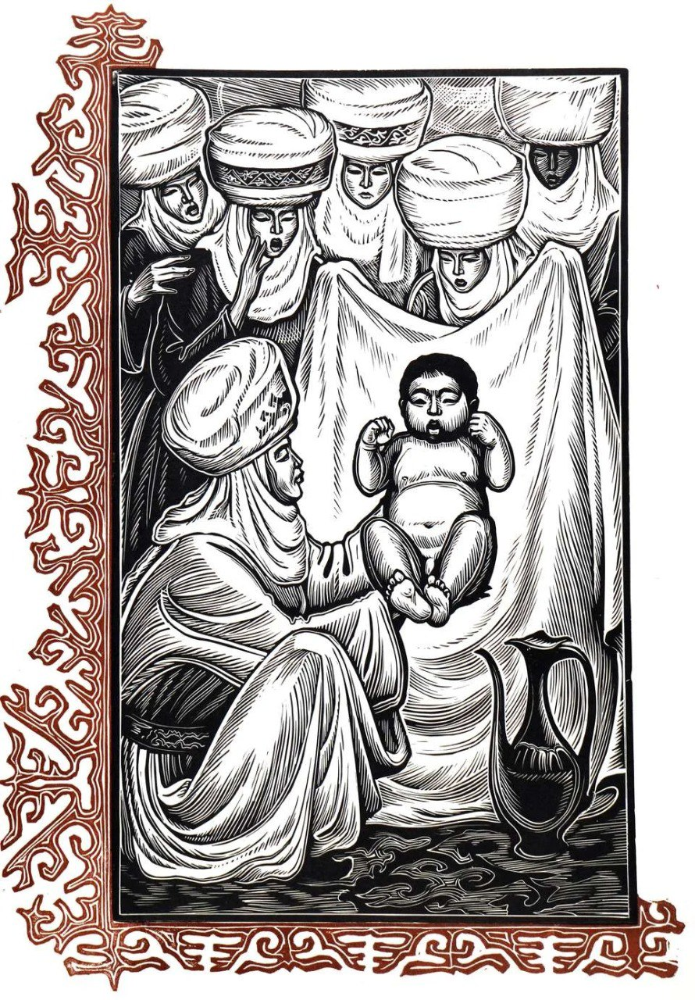

"Но мы уверены, пока век сменяется веком, пока эпоха следует за эпохой, пока жив будет киргизский народ (и все человечество!), эпос 'Манас' будет жить как сияющая вершина дерзновенного древнекиргизского духа..."
История эпоса
Что значит "Манас" для Киргызстана?
Наверное, в нашей культуре просто не найти аналогов: "Манас" - это стержень кыргызской идентичности, и именами его героев здесь называют улицы.
"Манас" - это эпос, повествующий о роде богатырей в трёх поколениях: Манасе, его сыне Семетее и внуке Сейтеке, а заодно обо всей степной Азии. Манас родился на Алтае, объединил киргизские племена против Китая, калмыков (джунгар) и уйгуров, привёл киргизов на Тянь-Шань (откуда их когда-то изгнали и рассеяли по свету китайцы) и наконец был смертелен ранен, осаждая Пекин. Его сын Семетей превзошёл отца своими подвигами, а в очередной битве тоже пал смертью храбрых... но не умер, а стал бессмертным, и в последней главе эпоса вновь вернулся на киргизскую землю, где ханом был поднят Сейтек, чтобы победить очередного врага и так же бесследно уйти до поры до времени.
"Манас" - это по сути вольный пересказ реальной истории киргизов, которые действительно пришли сюда из Южной Сибири: его герои воевали не с мифическими монстрами, а с батырами и армиями реально существовавших государств, и в последних главах воины стреляют друг по другу пулями, а одним из врагов является возникшее в 18 веке Кокандское ханство. "Манас" передавался из поколения в поколение, и среди киргизских сказителей особое место занимали манасчи, знавшие его наизусть. Их было немного, редко больше десятка на поколение: "Манас" - ещё и самая длинная в мире поэма, насчитывающая 500 553 строки (чтоб было ясно, 12 шрифтом в ворде с нулевым интервалом это около 10 тыс. страниц).
Содержание Манас огромно и не вмещается ни в какие тома. Какой человек способен все это держать в памяти? Для манасчи это назначение жизни. Он посвящает себя, свой дух, свою культуру, свою преданность Манасу. Он помнит Манас от начала и до конца и импровизирует каждый раз, когда излагает Манас. Манас и манасчи это уникальное и необъяснимое явление, манасчи это проводник и посредник двух миров человеческого и трансцендентного. Манасчи могут беспрерывного много часов подряд излагать Манас.
Манас — крупнейший кыргызский и мировой эпос. Эпос «Манас» назван так по имени своего главного героя— богатыря, объединившего киргизов. «Манас» включён в список шедевров нематериального культурного наследия человечества ЮНЕСКО, а также в Книгу рекордов Гиннеса как самый объёмный эпос в мире.
Эпос "Манас" - наследие, оставшееся от прадедов киргизского народа, национальная гордость, триумф духовной культуры. Это, веками, из поколения в поколение, передававшееся из уст в уста, великое фольклорное произведение в прозе. Потому что, в ней рассказываются история киргизов на протяжении более 1000 лет, жизнь общества, социальная, экономико-политическая обстановка, войны, которые велись за независимость, отношения с соседними народностями. Этот эпос по объёму является самым большим произведением в мире. К примеру, Саякбай Каралаев знал 500553 строк этого произведения. Сказительство Манаса - это одно из уникальных искусств в мире. Так как, к нему не требуются ни инструменты, ни оркестр. Манасчи сам по себе является актёром, дирижером и исполнителем.